|
|
| fishes text index | photo index |
| Phylum Chordata > Subphylum Vertebrata > fishes > Family Syngnathidae > pipefishes |
| Seagrass
pipefish awaiting identification* Family Syngnathidae updated Oct 2020
Where seen? This skinny long fish can be seasonally abundant in seagrass areas on our Northern shores. Also sometimes seen in seagrasses in the South. At low tide, it generally remains motionless among seagrasses and seaweeds, and resembles roots or twigs. Watch your step! Features: 8-10cm. Body long, cylindrical and somewhat stiff. Long snout with tiny tubular nostrils. Has tiny pelvic fins, a tiny dorsal fin at about mid-length of the body and a tiny fan-shaped tail fin. Comes in a wide range of colours and patterns, from black to brown, pink to green. Some have narrow pale bands widely but evenly spaced along the body. Others may be plain. Sometimes mistaken for other fishes that resemble twigs and roots. Here's more on how to tell apart stick-like fishes commonly seen on our shores. |
 Changi, May 12 |
 Changi, Oct 07 |
 Long tube-like toothless snout. Tiny tubular nostrils. Tiny pelvic fins. Changi, Aug 14 |
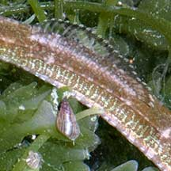 Dorsal fin Changi, Apr 05 |
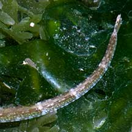 Small tail Changi, Apr 05 |
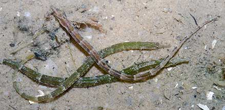 Changi, Jul 04 |
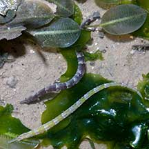 Changi, Jul 08 |
| Pipefish babies: Like the seahorse,
the male pipefish also carries the eggs. In some species, the male
has a pouch on the underside of his tail. For those without a pouch,
the eggs are glued to the underside of the male's tail or abdomen.
Often the eggs are embedded in a spongy tissue. Some have a pair of
flaps that fold over the eggs. Females have an ovipositor to lay eggs
on the male's body, where the eggs are then fertilised. In some species,
'pregnant' males may hang out together in small groups. The eggs develop
safely on dad's body. The father 'gives birth' to live young, which
emerge as miniatures of the adults. Some pipefishes may perform courtship dances before mating. Unlike seahorses, a mating pair of pipefishes may not remain faithful only to one another. A female might lay her eggs on several males, and a male might carry the eggs of several females. |
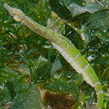 Very pregnant papa. Changi, Jun 13 |
 Very pregnant papa. Changi, Apr 09 |
| Status and threats: See Family Sygnathidae for threats to pipefishes and seahorses. |
*Species are difficult to positively identify without close examination of small features.
On this website, they are grouped by general large external features for convenience of display.
| Seagrass pipefishes on Singapore shores |
On wildsingapore
flickr
|
| Other sightings on Singapore shores |
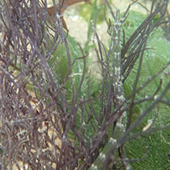 Punggol, Jun 18 Photo shared by Richard Kuah on facebook. |
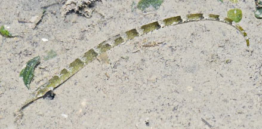 Changi Loyang, Apr 17 Photo shared by Loh Kok Sheng on facebook. |
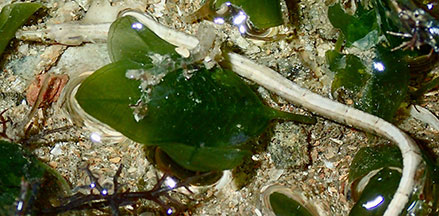 |
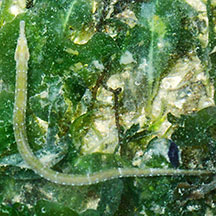 Pulau Sekudu, Aug 24 Photo shared by Chay Hoon on facebook. |
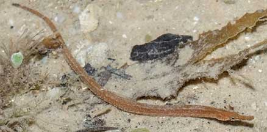 St John's Island, Oct 20 Photo shared by James Koh on flickr. |
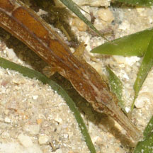 |
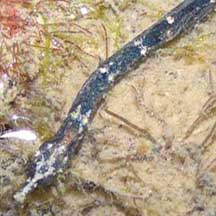 Pulau Semakau, Dec 08 |